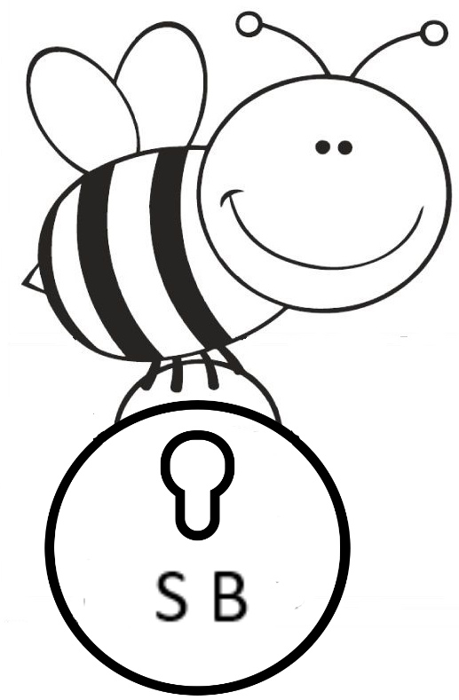
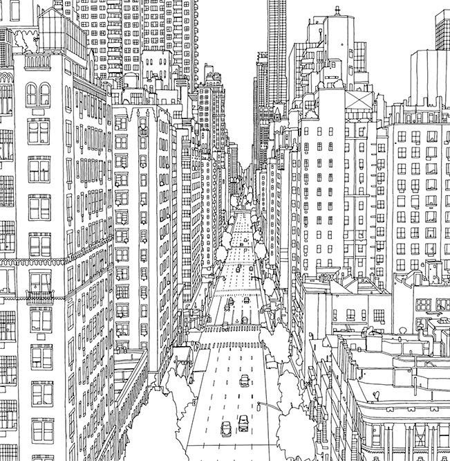

S
ecure
B
ee
Sua plataforma de mensagens seguras.

Utilizar o site da
S
ecure
B
ee
é uma experiência rápida, fácil e segura. Destinada a todas as idades, a
S
ecure
B
ee
utiliza um mecanismo denominado cifra de césar
(clique
aqui
para ler sobre a cifra de cesar)
para tornar secreta a sua mensagem de uma forma divertida. Sabemos que as abelhinhas, na natureza, são importantes polinizadoras e fazem constantemente o papel de transportar os pólens de uma flor masculina para uma flor feminina. As abelhinhas da
S
ecure
B
ee
, carregam o número de
pólens (deslocamento das letras)
que o usuário escolher e assim, conseguem fazer o mesmo papel das abelhinhas polinizadoras. Elas voam de uma flor para a outra transportando a sua mensagem até um ambiente seguro com a opção
"polinizar"
, cifrando e tranformando-as em um conjunto embaralhado de letras. As abelhinhas da
S
ecure
B
ee
também são ensinadas a voarem de volta para a flor inicial dezembaralhando e decifrando a sua mensagem com a opção que aqui denominamos
"depolinizar"
. Selecione a opção
"retornar a colmeia"
para digitar novamente a sua mensagem e reiniciar a seleção do número de pólens.
Escolha o número de pólens que a sua abelhinha vai carregar:
Atenção
o número de pólens funciona como um número de segurança, para decifrar
(opção despolinizar)
a mensagem é necessário inserir o mesmo número de pólens que você utilizou para cifra-la
(opção polinizar)
.
Agora, digite a mensagem que a abelhinha irá carregar:
Pronto!
Agora escolha se deseja
polinizar (cifrar)
ou
despolinizar (decifrar)
a sua mensagem:
POLINIZAR
DESPOLINIZAR
Que
B
eeleza, você polinizou a flor e sua mensagem agora é:
Sua abelhinha retornou a flor de origem com a seguinte mensagem:
RETORNAR A COLMEIA